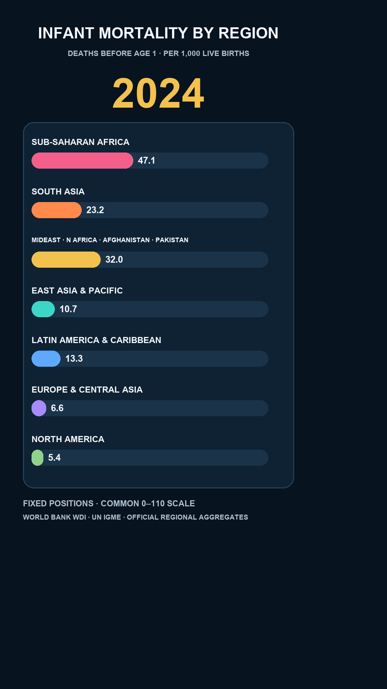

Infant mortality rate
Taxa de mortalidade infantil
- Definition
- Definição
- Deaths before age 1
- Óbitos antes de 1 ano
- Unit
- Unidade
- Per 1,000 live births
- Por 1.000 nascidos vivos
- Code
- Código
- SP.DYN.IMRT.IN
- Upstream
- Origem
- UN IGME via WDI

EPISODE 04 • EVIDENCE RECORD
EPISÓDIO 04 • REGISTRO DE EVIDÊNCIAS
Every region ended lower. The size of the drop was not the same.
Todas as regiões terminaram em nível menor. O tamanho da queda não foi igual.
Research question
Pergunta de pesquisa
Exploratory expectation
Expectativa exploratória
This was an exploratory expectation, not a blinded preregistered confirmatory hypothesis. “Biggest drop” is defined before comparison as the 1990 value minus the 2024 value, in the stated unit.
Esta foi uma expectativa exploratória, não uma hipótese confirmatória pré-registrada e cega. “Maior queda” foi definida antes da comparação como o valor de 1990 menos o valor de 2024, na unidade declarada.
One measure
Uma medida
Coverage
Cobertura
Seven official World Bank regional aggregates.
Sete agregados regionais oficiais do Banco Mundial.
1990–2024
245 region-years; no missing values or duplicate keys.
245 regiões-ano; sem valores ausentes ou chaves duplicadas.
Official WDI aggregates—not arithmetic country averages calculated by SignalPair.
Agregados oficiais do WDI—não médias aritméticas dos países calculadas pelo SignalPair.
Observed endpoints
Extremos observados

All seven official regional series were lower in 2024 than in 1990. South Asia had the largest absolute decline: 85.5 to 23.2, a drop of 62.3 deaths before age 1 per 1,000 live births.
As sete séries regionais oficiais estavam menores em 2024 do que em 1990. O Sul da Ásia teve a maior queda absoluta: de 85,5 para 23,2, queda de 62,3 óbitos antes de 1 ano por 1.000 nascidos vivos.
Descriptive, not causal. The chart does not identify why the rates changed or imply that every country followed its regional aggregate.
Descritivo, não causal. O gráfico não identifica por que as taxas mudaram nem implica que todos os países seguiram o agregado de sua região.
−55.0
−62.3
−47.1
−33.8
−30.8
−19.0
−3.8
Visual construction
Construção visual
The seven regions never reorder, so motion means a value change—not a rank jump.
As sete regiões nunca mudam de ordem; o movimento representa mudança de valor, não salto de posição.
Every bar begins at zero on the same 0–110 scale. The maximum observed annual value is 102.9.
Todas as barras começam em zero na mesma escala de 0–110. O maior valor anual observado é 102,9.
The controlling observations are integer years from 1990 through 2024.
As observações que controlam o gráfico são anos inteiros de 1990 a 2024.
Between-year motion is linear visual interpolation only; fractional frames are not separate observations.
O movimento entre anos é apenas interpolação visual linear; quadros fracionários não são observações separadas.
No narration or substantive conclusion is imposed; direct labels and a large year carry the reading.
Não há narração nem conclusão substantiva imposta; rótulos diretos e o ano grande orientam a leitura.
Critical content avoids the right and lower Shorts interface areas.
O conteúdo crítico evita as áreas direita e inferior ocupadas pela interface dos Shorts.
Interpretation limits
Limites de interpretação
A regional series can hide substantial differences among countries and people inside the region.
Uma série regional pode esconder diferenças substanciais entre países e pessoas dentro da região.
The descriptive series do not isolate policy, income, medicine, vaccination, conflict or any other cause.
As séries descritivas não isolam política pública, renda, medicina, vacinação, conflito ou qualquer outra causa.
The episode explicitly asks for absolute change in the original unit. A percentage ranking produces a different leader.
O episódio pergunta explicitamente pela mudança absoluta na unidade original. Um ranking percentual produz outra liderança.
The analysis freezes the WDI snapshot last updated 2026-07-13. Later official releases may revise recent or historical values.
A análise congela o snapshot do WDI atualizado em 13/07/2026. Versões oficiais futuras podem revisar valores recentes ou históricos.
The animation visually interpolates between annual observations. It does not claim measured monthly or fractional-year values.
A animação interpola visualmente entre observações anuais. Ela não afirma valores mensais ou de frações de ano medidos.
Data and audit trail
Dados e trilha de auditoria
Frozen WDI snapshot: last updated 2026-07-13. This page and the video remain local review candidates; no deployment or publication is authorized.
Snapshot WDI congelado: atualizado em 13/07/2026. Esta página e o vídeo permanecem candidatos locais para revisão; nenhum deploy ou publicação está autorizado.